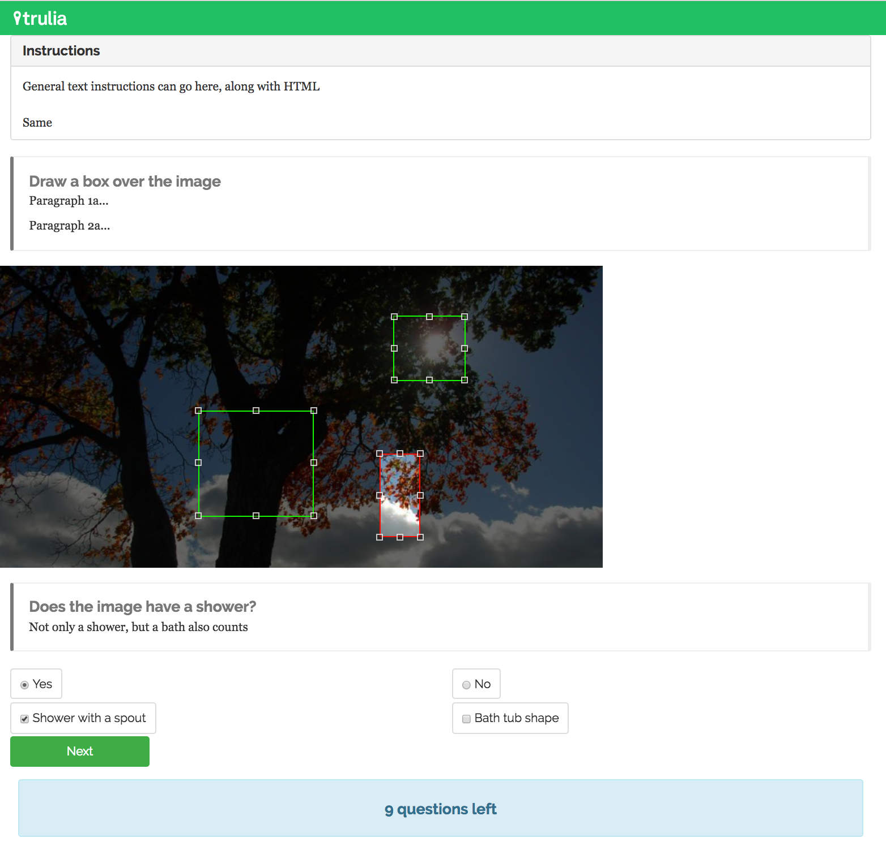

Tutorial (for developers)¶
Using the library directly¶
opencrowd was built to be easy to use inside of a python environment.
First generate the opencrowd server:
import opencrowd
oc = opencrowd.Opencrowd.regenerate()
Now generate a project object:
# CROWDSOURCE_SPECIFICATION is defined in opencrowd.config.opencrowd
project = oc.add_project(project=Project(title='Bounding Box: Bathroom Toilets',
description='Have workers draw bounding boxes around toilets',
crowdsource=CROWDSOURCE_SPECIFICATION)) # specification is config specific
opencrowd will now be tracking this project. Now, we will create a task and attach it to the project. The task will be comprised of 5 sections: collapsible instructions, which can have embedded HTML, a textbox specifying the question, a bounding box to gather data, a textbox section matched to a radio input group that potentially leads to another checkbox input group section.
task = Task()
for i in potential_bathroom_images:
# create the unique sections so opencrowd can id and link them dynamically
###############
collapsable_instructions = CollapsePanel(title="Instructions",
body="General text instructions can go here, along with HTML",
footer="Same")
bounding_box_textbox_instruction = TextBox(main_title='Draw a box over the sink', text=['example paragraph', 'example paragraph'])
bounding_box = BoundingBox(url="http://lorempixel.com/800/400/nature")
radio_group_instruction = TextBox(main_title='Does the image have a shower?', text=['Not only a shower, but a bath also counts'])
# a radio group first needs to be composed of options (buttons)
shower_button = Option(text='Yes', on_hover='hover text here', value='shower', correct=None)
no_shower_button = Option(text='No', on_hover='hover text here', value='no_shower', correct=None)
shower_radio_group = RadioGroup(options=[shower_button, no_shower_button])
spout_checkbox = Option(text='Shower with a spout', on_hover='...', value='spout', correct=None)
tub_checkbox = Option(text='Bath tub shape', on_hover='...', value='tub', correct=None)
bathroom_checkbox_group = CheckboxGroup(options=[spout_checkbox, tub_checkbox])
# link the shower radio button to the above checkbox group
shower_button.add_children(bathroom_checkbox_group)
################
# attach these unique objects to a question
question = Question()
question.add_section(collapsable_instructions, parents='root')
question.add_section(bounding_box_textbox_instruction, parents=collapsable_instructions)
question.add_section(bounding_box, parents=bounding_box_textbox_instruction)
question.add_section(radio_group_instruction, parents=bounding_box)
question.add_section(shower_radio_group, parents=radio_group_instruction)
question.add_section(bathroom_checkbox_group, parents=None)
# add the question to the task question pool
task.add_question(question)
A single Question from this Task will be rendered as:
When the user clicks next, they’ll move on the next question. Now, attach the task to the project. Prior to generating the HITs inside a task, the task must be attached to a project:
project.add_task(task)
task.create_HITs(questions_per_assignment=num_questions,
assignments_per_HIT=num_assignments)
Now that a project has a task with unsubmitted HITs inside of it:
project.submit_tasks()
Straightforward! To update a project, its’ underlying tasks, and by extension its HITs:
oc.update() # the opencrowd server object
To get a handle on what’s going on, let’s view all of the objects we’ve created:
print "Project Ids: {}".format(opencrowd.list_project_ids())
print "Task Ids: {}".format(opencrowd.list_task_ids())
print "HIT Ids: {}".format(opencrowd.list_HIT_ids())
print "Assignment IDs: {}".format(opencrowd.list_assignment_ids())
print "Question IDs: {}".format(opencrowd.list_question_ids())
print "Section IDs: {}".format(opencrowd.list_section_ids())
Finally, to view workers’ answers, let’s collect all the assignments together:
responses = []
for assignment in oc.get_assignment_objects():
responses.append(oc.generate_response(assignment))
The assignments themselves must first be transformed into response objects for parsing. From here, the responses can be json dumped.
for response in responses:
print json.dumps(response.dump(), indent=4)